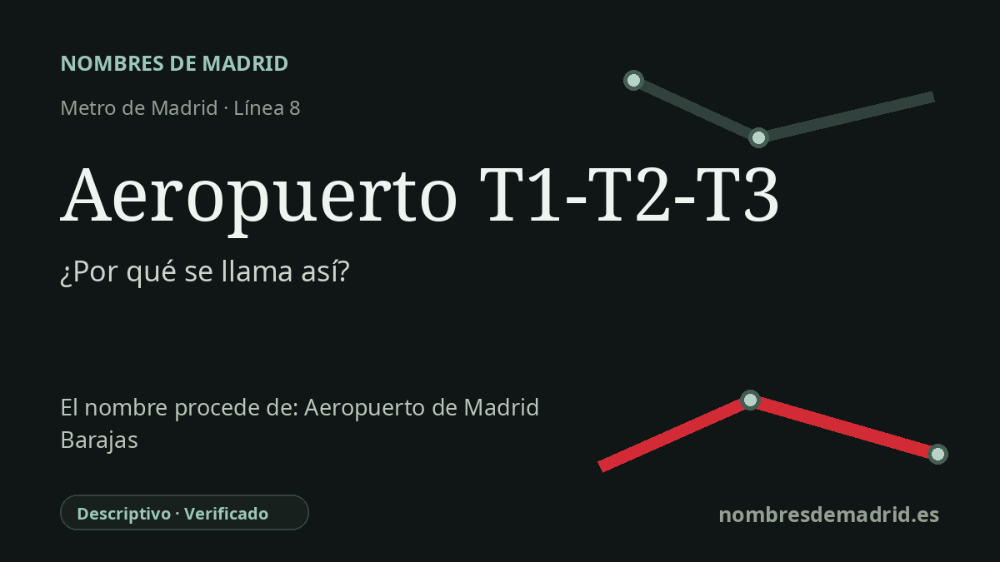

Publicado el · Investigación de Nombres de Madrid · Cómo verificamos cada origen · 7 fuentes consultadas
Respuesta rápida
La estación recibe un nombre funcional: da servicio a las terminales T1, T2 y T3 del aeropuerto de Madrid-Barajas. Abrió en 1999 como Aeropuerto y recibió su nombre actual el 3 de mayo de 2007, cuando la línea 8 se prolongó hasta Aeropuerto T4.
La historia del nombre
El nombre Aeropuerto T1-T2-T3 es una indicación directa para orientarse. Señala a los viajeros que esta estación de la línea 8 sirve a las terminales 1, 2 y 3 del Aeropuerto Adolfo Suárez Madrid-Barajas; Aena sitúa la parada de Metro en la Terminal 2, planta 1, mientras que la Terminal 4 cuenta con su propia estación.
La estación no nació con este nombre completo. Las cronologías de la red recogen que la parada abrió el 14 de junio de 1999 como Aeropuerto, en la prolongación desde Campo de las Naciones hasta el aeropuerto. Cuando la línea 8 se amplió después más allá de Barajas hasta la nueva estación de T4, la parada aeroportuaria original pasó a llamarse Aeropuerto T1-T2-T3 el 3 de mayo de 2007 para distinguir el conjunto histórico de terminales de la Terminal 4.
El aeropuerto que explica el nombre es casi siete décadas anterior a la llegada del Metro. Aena indica que el Aeropuerto Nacional de Madrid se abrió al tráfico aéreo el 22 de abril de 1931, en un páramo de unas 500 fanegas junto al entonces municipio de Barajas, elegido en parte por su comunicación por carretera con Madrid. Las operaciones comerciales comenzaron a finales de 1933, y la evolución posterior de las terminales dio lugar a la actual T2 a partir del terminal nacional de los años cincuenta y a la T1 desde el terminal internacional iniciado en 1971.
El nombre oficial del aeropuerto volvió a cambiar en 2014. Mediante la Orden FOM/480/2014, de 24 de marzo de 2014, publicada en el BOE el 26 de marzo, Madrid-Barajas pasó a denominarse Aeropuerto Adolfo Suárez Madrid-Barajas en memoria de Adolfo Suárez, primer presidente de la etapa democrática española y figura central de la Transición. El nombre de la estación de Metro, sin embargo, sigue siendo terminal y funcional: apunta al área aeroportuaria, no a Suárez como persona.
El topónimo antiguo Barajas conviene tratarlo con cautela. Una explicación de apariencia árabe no está firmemente respaldada; un artículo especializado sobre el topónimo madrileño rechaza la derivación legendaria de un supuesto moro llamado Bar Axa y propone más bien una base antroponímica antigua, prerromana o hispanocéltica. Para esta estación, por tanto, la etimología segura es sencilla y operativa: se llama así por las terminales del aeropuerto a las que da servicio.